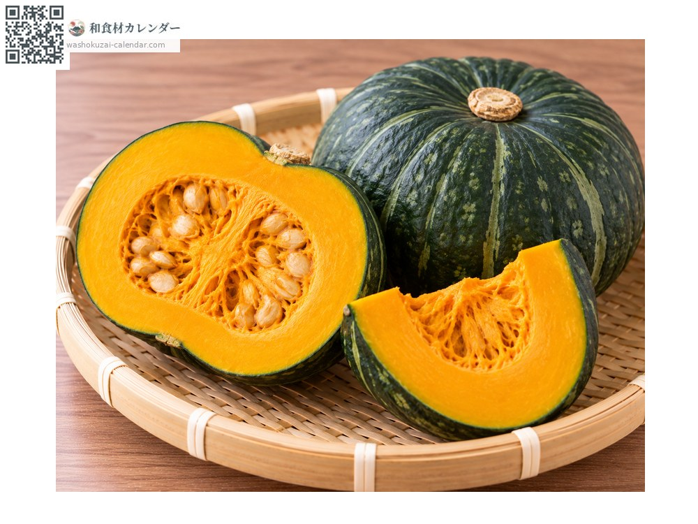
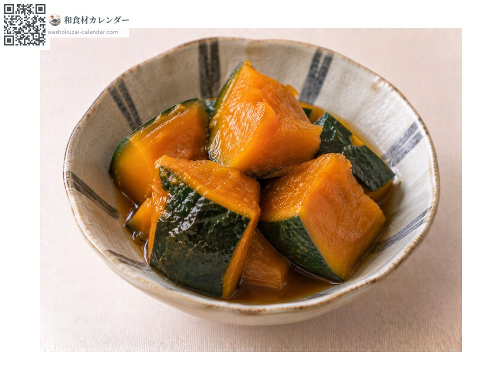
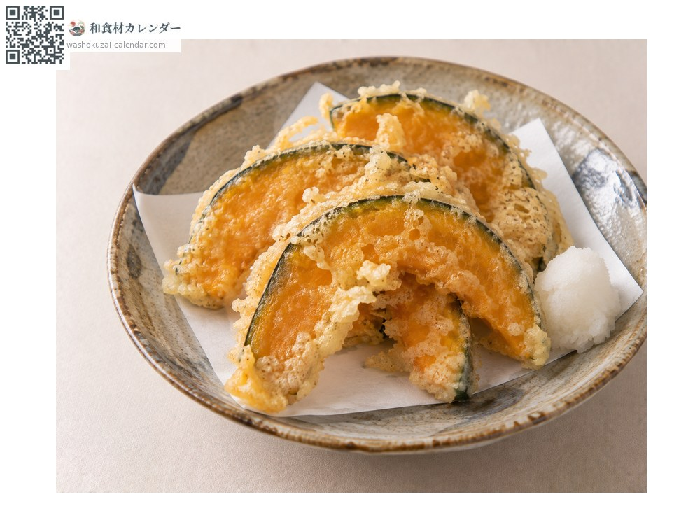
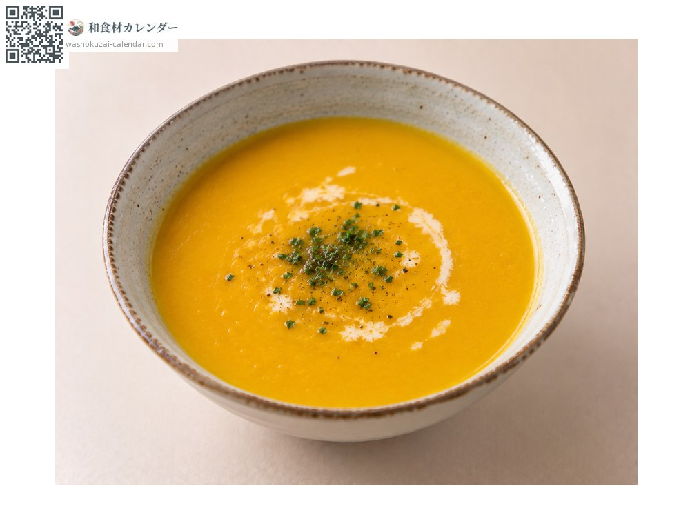

Vegetables
Kabocha squash
カボチャ かぼちゃ kabocha
Also known askabocha
At its best in Aug, Sep, Oct

When it is at its best
Jan
Feb
Mar
Apr
May
Jun
Jul
Aug
Sep
Oct
Nov
Dec
In seasonAvailable
How to cook

Nimono (simmered in dashi)
Simmered in dashi and soy, sweet and savoury.

Tempura
Sliced thin and fried.

Puréed soup
Puréed with milk.
Gratin
Works beautifully with cheese.
How to choose
A sunken area around the stem that is dry and cracked. Cut pieces should have packed seeds and deeply coloured flesh.
Storage
Whole squash keeps one to two months in a well-ventilated room. Once cut, remove seeds and pith and refrigerate.
Main areas
Good to know
Stored one to two months after harvest, its starch turns to sugar and it sweetens. Harvested in summer, at its best in autumn.